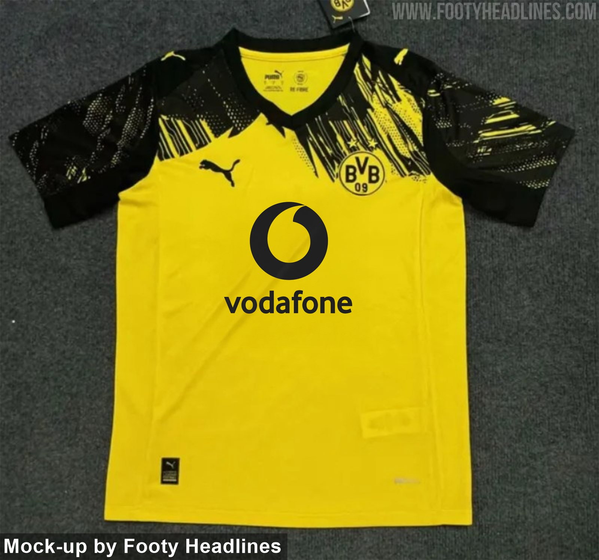

Borussia Dortmund 25-26 İç Saha Forması İncelemesi
| Üretici: | Puma |
| Sezon: | 2025-26 |
| Takım: | Borussia Dortmund |
| Teknoloji: | dryCELL |
| Renk: | 🟡⚫ |
Tasarım ve İlham Kaynağı
Borussia Dortmund’un 2025-2026 iç saha forması, geçmişin nostaljik izlerini taşıyan ve modern çizgilerle bütünleşen eşsiz bir tasarıma sahip. Puma, bu sezonun formasını 1993-94 sezonundaki efsanevi formadan ilham alarak oluşturmuş. Üst gövde ve omuzlar boyunca uzanan siyah soyut desenler, klasik sarı zeminle dikkat çekici bir kontrast oluşturuyor. Bu desenler formaya sadece retro bir hava katmakla kalmıyor, aynı zamanda modernlikten ödün vermeyen bir estetik sunuyor.
Teknoloji ve Konfor
Puma'nın dryCELL teknolojisiyle donatılan bu forma, teri vücuttan uzaklaştırarak oyuncuların kuru kalmasına yardımcı oluyor. Kumaş oldukça hafif ve nefes alabilir özellikte, bu da özellikle yoğun efor gerektiren maç anlarında konforu artırıyor. Ayrıca forma, çevre dostu üretim anlayışıyla %100 geri dönüştürülmüş polyesterden üretilmiş. Bu yönüyle hem performans hem çevre bilinci açısından takdir topluyor.
Genel Değerlendirme
Dortmund’un 25-26 sezon forması, taraftarların geçmişe duyduğu özlemi modern çizgilerle harmanlayarak karşılıyor. Formanın ön kısmındaki desenler, sadelikten uzak ama karmaşık da olmayan dengeli bir yapıda. Özellikle yaka kısmında sade siyah detaylar tercih edilerek sadelik korunmuş. Sarı ve siyahın efsanevi birlikteliği, bu sezonda da etkileyici şekilde vurgulanıyor. Hem sahada kullanılabilecek kadar teknik hem de günlük hayatta giyilebilecek kadar şık bir forma olarak öne çıkıyor.
🐝 Borussia Dortmund 2025-26 İç Saha Forması – Güncel Fiyat Bilgisi
Dortmund 25-26 Puma İç Saha Forması
Fiyat: 6.499,00 ₺ (Tahmini)
Satıcı: Puma Resmi Mağaza
Açıklama: Retro ilhamla tasarlanmış bu forma, dryCELL teknolojisi ve ikonik tasarımı ile öne çıkıyor.
Not: Fiyatlar, satıcılara ve döviz kuruna göre değişebilir.